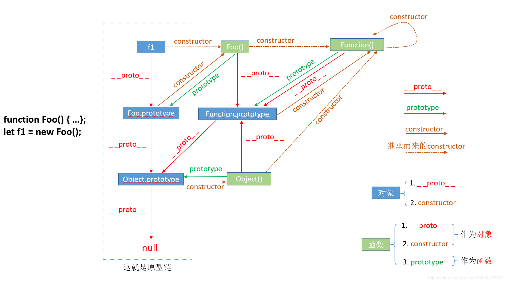

JavascriptJS基础js有哪些数据类型typeof 与 instanceof的区别== 与 === 的区别null与undefined的区别new在javascript中的意义call,apply,bind的作用作用域与作用域链改变作用域的方法闭包原型和原型链继承方式原型链继承构造继承组合继承寄生组合继承实例继承拷贝继承浏览器 BOM DOM storage事件机制事件循环 event-loop防抖与节流几个很实用的BOM属性对象方法?cookie sessionStorage localStorage区别同源和跨域浏览器的同源策略XHR请求跨域JSONPCORS跨域资源共享（Cross-origin resource sharing）iframe + form实现post跨域Nginx代理WebsocketNodejs中间件代理窗口间跨域postMessage跨域window.namelocation.hash + iframe（同主域）document.domain（同主域）异步JS异步加载的三种方式HTML5新属性：async和defer方法一：Script DOM Element方法二：onload时的异步加载方法三：其他方法JS源码Ajax实现深拷贝Promise实现Promise实现ajax请求Javascript实现数组排序算法简单排序冒泡排序选择排序快速排序插入排序希尔排序归并排序instanceof源码判断是否为ArrayArray.of源码bind的实现Object.is实现__ proto __ 的实现new的实现JS模块化ES6箭头函数和function的区别let和var的区别
基本数据类型： Number、String、Boolean、Undefined、Null、Symbol(ES6)
引用数据类型： Array、Object、Function
区别： 基本数据类型在内存（内存栈）中保存的是实际值，是按值访问的。而引用数据类型在内存中保存的是指针所指向的地址。
boolean number string undefined object function。null 是js中的关键字，表示空值，null可以看作是object的一个特殊的值，如果一个object值为空，表示这个对象不是有效对象。
undefined 不是js中的关键字，其是一个全局变量，是Global的一个属性，以下情况会返回undefined:
输出比较
xxxxxxxxxx131typeOf undefined; //undefined2typeOf null; //object34Number(undefined); //NaN5Number(10+undefined); //NaN6Number(null); //07Number(10+null); //1089undefined===null; //false10undefined==null; //true1112var arr=["aa","bb","cc"];13arr=null; //null当用完一个比较大的对象，进行释放内存时，设置为null通过 new 创建的对象 和 构造函数之间建立了一条原型链，原型链的建立，让原本孤立的对象有了依赖关系和继承能力，让JavaScript 对象能以更合适的方式来映射真实世界里的对象，这是面向对象的本质。
call(A, args1,args2);
apply(A, arguments);
bind返回是函数，的第二个参数：call 是把第二个及以后的参数作为 func 方法的实参传进去，而 func1 方法的实参实则是在 bind 中参数的基础上再往后排。
xxxxxxxxxx81function func(a, b, c) {2 console.log(a, b, c);3}4var func1 = func.bind(null,'linxin');56func('A', 'B', 'C'); // A B C7func1('A', 'B', 'C'); // linxin A B8func1('B', 'C'); // linxin B C作用域也就是变量的执行环境，即上下文。 作用域链是变量的传递的方向，作用域链的最前端是活动对象，最末端是全局变量window。
bind改变了以后，返回值是函数。
详解 https://www.jianshu.com/p/26c81fde22fb
当一个内部函数被其外部函数之外的变量引用时，就形成了一个闭包。
闭包的用途： 在 Javascript 中，如果一个对象不再被引用，那么这个对象就会被 GC 回收，否则这个对象一直会保存在内存中。
主要作用： 当我们需要在模块中定义一些变量，并希望这些变量一直保存在内存中但又不会 “污染” 全局的变量时
xxxxxxxxxx161// 闭包的高级写法2(function (document) {3 var viewport;4 var obj = {5 init: function(id) {6 viewport = document.querySelector('#' + id);7 },8 addChild: function(child) {9 viewport.appendChild(child);10 },11 removeChild: function(child) {12 viewport.removeChild(child);13 }14 }15 window.jView = obj;16})(document);详解 https://github.com/mqyqingfeng/Blog/issues/2
超详解 https://www.jianshu.com/p/dee9f8b14771

原型是一个对象，即prototype。Function才有prototype，而所有object都有** proto **。
原型链是原型对象创建过程的历史记录。
核心： 将父类的实例作为子类的原型。
特点： 既是父类的实例，也是子类的实例，父类新增原型方法/原型属性，子类都能访问到，简单，易于实现
缺点： 无法实现多继承，创建子类实例时，无法向父类构造函数传参
xxxxxxxxxx101function Cat(){ }2Cat.prototype = new Animal();3Cat.prototype.name = 'cat';4// Test Code5var cat = new Cat();6console.log(cat.name);7console.log(cat.eat('fish'));8console.log(cat.sleep());9console.log(cat instanceof Animal); //true10console.log(cat instanceof Cat); //true核心： 使用父类的构造函数来增强子类实例，等于是复制父类的实例属性给子类
特点： 解决了子类实例共享父类引用属性的问题， 创建子类实例时，可以向父类传递参数，可以实现多继承（call多个父类对象）
缺点： 只能继承父类的实例属性和方法，不能继承原型属性/方法，无法实现函数复用，每个子类都有父类实例函数的副本，影响性能
xxxxxxxxxx101function Cat(name){2 Animal.call(this);3 this.name = name || 'Tom';4}5// Test Code6var cat = new Cat();7console.log(cat.name);8console.log(cat.sleep());9console.log(cat instanceof Animal); // false10console.log(cat instanceof Cat); // true核心： 通过调用父类构造，继承父类的属性并保留传参的优点，然后通过将父类实例作为子类原型，实现函数复用
特点： 可以继承实例属性/方法，也可以继承原型属性/方法，既是子类的实例，也是父类的实例，不存在引用属性共享问题，可传参，函数可复用
xxxxxxxxxx121function Cat(name){2 Animal.call(this);3 this.name = name || 'Tom';4}5Cat.prototype = new Animal();6Cat.prototype.constructor = Cat;7// Test Code8var cat = new Cat();9console.log(cat.name);10console.log(cat.sleep());11console.log(cat instanceof Animal); // true12console.log(cat instanceof Cat); // true核心： 通过调用父类构造，继承父类的属性并保留传参的优点，然后通过将父类实例作为子类原型，实现函数复用
xxxxxxxxxx171function Cat(name){2 Animal.call(this);3 this.name = name || 'Tom';4}5(function(){6 // 创建一个没有实例方法的类7 var Super = function(){};8 Super.prototype = Animal.prototype;9 //将实例作为子类的原型10 Cat.prototype = new Super();11})();12// Test Code13var cat = new Cat();14console.log(cat.name);15console.log(cat.sleep());16console.log(cat instanceof Animal); // true17console.log(cat instanceof Cat); //true核心： 为父类实例添加新特性，作为子类实例返回
特点： 不限制调用方式，不管是new 子类()还是子类(),返回的对象具有相同的效果
缺点： 实例是父类的实例，不是子类的实例，不支持多继承
核心： 拷贝父类元素上的属性和方法
特点： 支持多继承
缺点： 效率较低，内存占用高（因为要拷贝父类的属性）
target和currentTarget的区别： target是指事件绑定的元素，currentTarget是指事件当前正到的元素。只有当target的元素和currentTarget的元素相同时，才刚好是事件执行到目标节点的位置。
element.addEventListener(event, function, useCapture) || IE => attachEvent
useCapture boolean 指定事件是否在捕获或冒泡阶段执行 || false:冒泡（默认） | true: 捕获
element.removeEventListener(event,funciton,useCapture) 解除事件绑定 || IE => detachEvent
事件委托 ：解决事件处理程序过多。利用的是事件冒泡原理。
xxxxxxxxxx281// 事件委托还有一个好处就是添加进来的元素也能绑定事件2<body>3 <ul id="thl">4 <li>001</li>5 <li>002</li>6 <li>003</li>7</ul>8<button onclick="fun()">touch</button>9<script>10 var thl= document.getElementById('thl');11 thl.onclick = function(ev) {12 ev = ev || event;13 //兼容处理14 var target = ev.target || ev.srcElement;15 //找到li元素16 if (target.nodeName.toLowerCase() == 'li') {17 console.log(target.innerHTML);18 }19 };2021 function fun(){22 var node=document.createElement("li");23 var textnode=document.createTextNode("maomaoliang");24 node.appendChild(textnode);25 document.getElementById("thl").appendChild(node);26 }27</script>28</body>同步： 如果函数在返回时，调用者可以得到预期的结果。 异步： 如果函数在返回时，调用者还拿不到预期的结果，需要将来通过一定手段得到。
调控异步任务的方法：消息队列。队列是一种先入先出型数据结构。
事件循环机制：调控同步和异步任务的机制。
由于主线程不断重复获取消息，执行消息，再取消息，再执行。所有这种机制称为事件循环。
用处：可以数组分块技术。 将一个执行事件非常长的任务，通过同步改异步的方式，减少每一块的执行事件，可以使主线程不用等太久。也可以让浏览器不卡顿或者假死。
在开发的过程中，我们经常需要绑定一些持续触发的事件，如scroll等等，有些时候我们不希望事件触发的那么频繁。
防抖： 触发事件后在n秒内函数只能执行一次，如果n秒内又触发了事件，则会重新计算函数执行事件。
节流： 节流，就是指连续触发事件但是在n秒中只执行一次函数。节流会稀释函数的执行频率。
什么是Bom? Bom是浏览器对象。有哪些常用的Bom属性呢？
location对象
history对象
Navigator对象
所谓同源是指：协议，域名，端口号相同。
同源策略又可分为两类：
如果没有同源策略会怎么样？
如果没有XHR同源，黑客可以通过CSRF(跨站请求伪造)攻击获取用户信息。获取页面中的cookie并直接跨域请求。
由于script标签不受浏览器的同源策略影响，允许跨域引用资源。因此可以动态创建script标签，然后利用src进行跨域。
xxxxxxxxxx141// 1. 定义一个 回调函数 handleResponse 用来接收返回的数据2function handleResponse(data) {3 console.log(data);4};56// 2. 动态创建一个 script 标签，并且告诉后端回调函数名叫 handleResponse7var body = document.getElementsByTagName('body')[0];8var script = document.getElement('script');9script.src = 'http://www.laixiangran.cn/json?callback=handleResponse';10body.appendChild(script);1112// 3. 通过 script.src 请求 `http://www.laixiangran.cn/json?callback=handleResponse`，13// 4. 后端能够识别这样的 URL 格式并处理该请求，然后返回 handleResponse({"name": "laixiangran"}) 给浏览器14// 5. 浏览器在接收到 handleResponse({"name": "laixiangran"}) 之后立即执行 ，也就是执行 handleResponse 方法，获得后端返回的数据，这样就完成一次跨域请求了。优点
缺点
详解 http://www.ruanyifeng.com/blog/2016/04/cors.html
优点
缺点
分类
简单请求（simple request）
HEAD GET POST三者之一Accept Accept-Language Content-Language Last-Event-ID application/x-www-form-urlencoded multipart/form-data text/plain非简单请求（not-so-simple request）
不满足简单请求的就是非简单请求。比如请求方法是PUT或DELETE，或者Content-Type字段的类型是application/json。
过程
简单请求（simple request）
浏览器发现这次跨源AJAX请求是简单请求，就自动在头信息之中，添加一个Origin字段，Origin字段用来说明，本次请求来自哪个源（协议 + 域名 + 端口）。
服务器根据这个值，决定是否同意这次请求，如果Origin指定的源，不在许可范围内，服务器会返回一个正常的HTTP回应。浏览器发现，这个回应的头信息没有包含Access-Control-Allow-Origin字段（详见下文），就知道出错了，从而抛出一个错误，被XMLHttpRequest的onerror回调函数捕获。
⚠️这种错误无法通过状态码识别，因为HTTP回应的状态码有可能是200。
如果Origin指定的域名在许可范围内，服务器返回的响应，会多出几个头信息字段。
xxxxxxxxxx41Access-Control-Allow-Origin: http://api.bob.com2 Access-Control-Allow-Credentials: true3 Access-Control-Expose-Headers: FooBar4 Content-Type: text/html; charset=utf-8Access-Control-Allow-Origin 字段必须。它的值要么是请求时Origin字段的值，要么是*，表示接受任意域名的请求。Access-Control-Allow-Credentials 字段可选，是一个布尔值，表示是否允许发送Cookie。默认情况下，Cookie不包括在CORS请求之中。设为true，即表示服务器许可，Cookie可以包含在请求中。这个值也只能设为true，如果服务器不要浏览器发送Cookie，删除该字段即可。Access-Control-Expose-Headers 字段可选。CORS请求时，XMLHttpRequest对象的getResponseHeader()方法只能拿到6个基本字段：Cache-Control、Content-Language、Content-Type、Expires、Last-Modified、Pragma。如果想拿到其他字段，就必须在Access-Control-Expose-Headers里面指定。上面的例子指定，getResponseHeader('FooBar')可以返回FooBar字段的值。如果要把Cookie发到服务器，不仅要服务器同意，开发者必须在AJAX请求中打开withCredentials属性
xxxxxxxxxx31var xhr = new XMLHttpRequest();2xhr.withCredentials = true;3//如果省略withCredentials，有的浏览器还是会一起发送Cookie。可以显式设置withCredentials = false⚠️如果要发送Cookie，Access-Control-Allow-Origin就不能设为*，必须指定明确的、与请求网页一致的域名。
非简单请求（not-so-simple request）
非简单请求的CORS请求，会在正式通信之前，增加一次HTTP查询请求，称为"预检"请求（preflight）。
浏览器先询问服务器，当前网页所在的域名是否在服务器的许可名单之中，以及可以使用哪些HTTP动词和头信息字段。只有得到肯定答复，浏览器才会发出正式的XMLHttpRequest请求，否则就报错。
"预检"请求用的请求方法是OPTIONS，表示这个请求是用来询问的。
Origin，表示请求来自哪个源。Access-Control-Request-Method 是必须的，用来列出浏览器的CORS请求会用到哪些HTTP方法。Access-Control-Request-Headers 是一个逗号分隔的字符串，指定浏览器CORS请求会额外发送的头信息字段。预检请求的回应
xxxxxxxxxx101HTTP/1.1 200 OK2Date: Mon, 01 Dec 2008 01:15:39 GMT3Server: Apache/2.0.61 (Unix)4Access-Control-Allow-Origin: http://api.bob.com5Access-Control-Allow-Methods: GET, POST, PUT6Access-Control-Allow-Headers: X-Custom-Header7Content-Type: text/html; charset=utf-88Content-Encoding: gzip9Content-Length: 010Content-Type: text/plainAccess-Control-Allow-Origin 字段必须，表示 http://api.bob.com 可以请求数据。该字段也可以设为*，表示同意任意跨源请求。
Access-Control-Allow-Methods 字段必需，表明服务器支持的所有跨域请求的方法。
⚠️返回的是所有支持的方法，而不单是浏览器请求的那个方法。这是为了避免多次"预检"请求。
Access-Control-Allow-Headers 如果浏览器请求包括Access-Control-Request-Headers字段，则Access-Control-Allow-Headers字段是必需的。表明服务器支持的所有头信息字段，不限于浏览器在"预检"中请求的字段。
Access-Control-Allow-Credentials 字段与简单请求时的含义相同。
Access-Control-Max-Age 可选，指定本次预检请求的有效期，单位为"秒"。上面结果中，有效期是20天（1728000秒），即允许缓存该条回应1728000秒（即20天），在此期间，不用发出另一条预检请求。
如果浏览器否定了"预检"请求，会返回一个正常的HTTP回应，但是没有任何CORS相关的头信息字段。浏览器就会认定，服务器不同意预检请求，因此触发一个错误，被XMLHttpRequest对象的onerror回调函数捕获。
xxxxxxxxxx371const requestPost = ({url, data}) => {2 // 首先创建一个用来发送数据的iframe.3 const iframe = document.createElement('iframe')4 iframe.name = 'iframePost'5 iframe.style.display = 'none'6 document.body.appendChild(iframe)7 const form = document.createElement('form')8 const node = document.createElement('input')9 // 注册iframe的load事件处理程序,如果你需要在响应返回时执行一些操作的话.10 iframe.addEventListener('load', function () {11 console.log('post success')12 })1314 form.action = url15 // 在指定的iframe中执行form16 form.target = iframe.name17 form.method = 'post'18 for (let name in data) {19 node.name = name20 node.value = data[name].toString()21 form.appendChild(node.cloneNode())22 }23 // 表单元素需要添加到主文档中.24 form.style.display = 'none'25 document.body.appendChild(form)26 form.submit()2728 // 表单提交后,就可以删除这个表单,不影响下次的数据发送.29 document.body.removeChild(form)30}31// 使用方式32requestPost({33 url: 'http://localhost:9871/api/iframePost',34 data: {35 msg: 'helloIframePost'36 }37})xxxxxxxxxx101server{2# 监听9099端口3listen 9099;4# 域名是localhost5server_name localhost;6#凡是localhost:9099/api这个样子的，都转发到真正的服务端地址http://localhost:98717location ^~ /api {8proxy_pass http://localhost:9871;9}10}
postMessage是HTML5 XMLHttpRequest Level 2中的API，且是为数不多可以跨域操作的window属性之一，它可用于解决以下方面的问题：
xxxxxxxxxx31postMessage(data,origin);2// data: html5规范支持任意基本类型或可复制的对象，但部分浏览器只支持字符串，所以传参时最好用JSON.stringify()序列化。3// origin: 协议+主机+端口号，也可以设置为"*"，表示可以传递给任意窗口，如果要指定和当前窗口同源的话设置为"/"。window 对象有个 name 属性，该属性有个特征：即在一个窗口（window）的生命周期内，窗口载入的所有的页面（不管是相同域的页面还是不同域的页面）都是共享一个 window.name 的，每个页面对 window.name 都有读写的权限，window.name是持久存在一个窗口载入过的所有页面中的，并不会因新页面的载入而进行重置。
子框架具有修改父框架 src 的 hash 值，通过这个属性进行传递数据，且更改 hash 值，页面不会刷新。但是传递的数据的字节数是有限的。
对于主域名相同，而子域名不同的情况，可以使用 document.domain 来跨域。这种方式非常适用于 iframe 跨域的情况。
比如主域名是http://crossdomain.com:9099，子域名是http://child.crossdomain.com:9099，这种情况下给两个页面指定一下document.domain即document.domain = crossdomain.com就可以访问各自的window对象了。
defer
async
这种加载方式执行完之前会阻止onload事件的触发。
xxxxxxxxxx91// 动态插入<script>标签2(function(){3 var scriptEle = document.createElement("script");4 scriptEle.type = "text/javasctipt";5 scriptEle.async = true; // async属性是HTML5中新增的异步支持6 scriptEle.src = "http://cdn.bootcss.com/jquery/3.0.0-beta1/jquery.min.js";7 var x = document.getElementsByTagName("head")[0];8 x.insertBefore(scriptEle, x.firstChild);9 })();把插入script的方法放在一个函数里面，然后放在window的onload方法里面执行，这样就解决了阻塞onload事件触发的问题。
xxxxxxxxxx151(function(){2 if(window.attachEvent){3 window.attachEvent("load", asyncLoad);4 }else{5 window.addEventListener("load", asyncLoad);6 }7 var asyncLoad = function(){8 var ga = document.createElement('script');9 ga.type = 'text/javascript';10 ga.async = true;11 ga.src = ('https:' == document.location.protocol ? 'https://ssl' : 'http://www') + '.google-analytics.com/ga.js';12 var s = document.getElementsByTagName('script')[0];13 s.parentNode.insertBefore(ga, s);14 }15)();由于JavaScript的动态性，还有很多异步加载方法： XHR Injection、 XHR Eval、 Script In Iframe、 Script defer属性、 document.write(script tag)。
XHR Injection(XHR 注入)：通过XMLHttpRequest来获取JavaScript，然后创建一个script元素插入到DOM结构中。ajax请求成功后设置script.text为请求成功后返回的responseText。
xxxxxxxxxx201//获取XMLHttpRequest对象，考虑兼容性。2 var getXmlHttp = function(){3 var obj;4 if (window.XMLHttpRequest)5 obj = new XMLHttpRequest();6 else7 obj = new ActiveXObject("Microsoft.XMLHTTP");8 return obj;9 };10 //采用Http请求get方式;open()方法的第三个参数表示采用异步(true)还是同步(false)处理11 var xmlHttp = getXmlHttp();12 xmlHttp.open("GET", "http://cdn.bootcss.com/jquery/3.0.0-beta1/jquery.min.js", true);13 xmlHttp.send();14 xmlHttp.onreadystatechange = function(){15 if (xmlHttp.readyState == 4 && xmlHttp.status == 200){16 var script = document.createElement("script");17 script.text = xmlHttp.responseText;18 document.getElementsByTagName("head")[0].appendChild(script);19 }20 }XHR Eval：与XHR Injection对responseText的执行方式不同，直接把responseText放在eval()函数里面执行。
xxxxxxxxxx221 //获取XMLHttpRequest对象，考虑兼容性。2 var getXmlHttp = function(){3 var obj;4 if (window.XMLHttpRequest)5 obj = new XMLHttpRequest();6 else7 obj = new ActiveXObject("Microsoft.XMLHTTP");8 return obj;9 };10 //采用Http请求get方式;open()方法的第三个参数表示采用异步(true)还是同步(false)处理11 var xmlHttp = getXmlHttp();12 xmlHttp.open("GET", "http://cdn.bootcss.com/jquery/3.0.0-beta1/jquery.min.js", true);13 xmlHttp.send();14 xmlHttp.onreadystatechange = function(){15 if (xmlHttp.readyState == 4 && xmlHttp.status == 200){16 eval(xmlHttp.responseText);17 //alert($);//可以弹出$,表明JS已经加载进来。click事件放在其它出会出问题，应该是还没加载进来18 $("#btn1").click(function(){19 alert($(this).text());20 });21 }22 }Script In Irame：在父窗口插入一个iframe元素，然后再iframe中执行加载JS的操作。
xxxxxxxxxx71 var insertJS = function(){alert(2)};2 var iframe = document.createElement("iframe");3 document.body.appendChild(iframe);4 var doc = iframe.contentWindow.document;//获取iframe中的window要用contentWindow属性。5 doc.open();6 doc.write("<script>var insertJS = function(){};<\/script><body οnlοad='insertJS()'></body>");7 doc.close();GMail Mobile：业内JS内容被注释，所以不会执行，在需要的时候，获取script中的text内容去掉注释，调用eval()执行。
xxxxxxxxxx51<script type="text/javascript">2/*3var ...4*/5</script>Ajax的实现步骤:
readyState: 存有 XMLHttpRequest 的状态。从 0 到 4 发生变化。
0: 请求未初始化；
1: 服务器连接已建立
2: 请求已接收
3: 请求处理中
4: 请求已完成，且响应已就绪
xxxxxxxxxx91//精简版2var xmlHttp = new XMLHttpRequest();3 xmlHttp.open('get','demo_get.html','true');//调用open()方法并采用异步方式4 xmlHttp.send(); //使用open()方法将请求发送出去5 xmlHttp.onreadystatechange()=>{6 if(xmlHttp.readyState === 4 && xmlHttp.status === 200){78 }9}xxxxxxxxxx321//完整版2function ajax(options){3 var xhr = null;4 var params = formsParams(options.data);5 //创建对象6 if(window.XMLHttpRequest){7 xhr = new XMLHttpRequest()8 } else {9 xhr = new ActiveXObject("Microsoft.XMLHTTP");10 }11 // 连接12 if(options.type == "GET"){13 xhr.open(options.type,options.url + "?"+ params,options.async);14 xhr.send(null)15 } else if(options.type == "POST"){16 xhr.open(options.type,options.url,options.async);17 xhr.setRequestHeader("Content-Type","application/x-www-form-urlencoded");18 xhr.send(params);19 }20 xhr.onreadystatechange = function(){21 if(xhr.readyState == 4 && xhr.status == 200){22 options.success(xhr.responseText);23 }24 }25 function formsParams(data){26 var arr = [];27 for(var prop in data){28 arr.push(prop + "=" + data[prop]);29 }30 return arr.join("&");31 }32}xxxxxxxxxx251// 方法一：使用JSON对象的parse和stringify，当值为undefined、function、symbol会在转换过程中被忽略2function deepClone(obj){3 let _obj = JSON.stringify(obj),4 objClone = JSON.parse(_obj);5 return objClone6}78// 方法二： 通过递归方法，遍历每个元素的子节点，直到没有子节点为止，复制出一个相同的对象。9function deepClone(obj){10 let objClone = Array.isArray(obj)?[]:{};11 if(obj && typeof obj==="object"){12 for(key in obj){13 if(obj.hasOwnProperty(key)){14 //判断ojb子元素是否为对象，如果是，递归复制15 if(obj[key]&&typeof obj[key] ==="object"){16 objClone[key] = deepClone(obj[key]);17 }else{18 //如果不是，简单复制19 objClone[key] = obj[key];20 }21 }22 }23 }24 return objClone;25} xxxxxxxxxx581function Promise(fn) {2 var state = "pending",3 value = null,4 callbacks = []5 this.then = function (onFulfilled, onRejected) {6 return new Promise(function (resolve, reject) {7 handle({8 onFulfilled: onFulfilled || null,9 onRejected: onRejected || null,10 resolve: resolve,11 reject: reject,12 })13 })14 }15 function handle(callback) {16 if (state === "pending") {17 callbacks.push(callback)18 return19 }20 var cb = state === "fulfilled" ? callback.onFulfilled : callback.onRejected,21 ret22 if (cb === null) {23 cb = state === "fulfilled" ? callback.resolve : callback.reject24 cb(value)25 return26 }27 ret = cb(value)28 callback.resolve(ret)29 }30 function resolve(newValue) {31 if (32 newValue &&33 (typeof newValue === "object" || typeof newValue === "function")34 ) {35 var then = newValue.then36 if (typeof then === "function") {37 then.call(newValue, resolve, reject)38 return39 }40 }41 state = "fulfilled"42 value = newValue43 execute()44 }45 function reject(reason) {46 state = "rejected"47 value = reason48 execute()49 }50 function execute() {51 setTimeout(function () {52 callbacks.forEach(function (callback) {53 handle(callback)54 })55 }, 0)56 }57 fn(resolve, reject)58}xxxxxxxxxx221let getJson = url =>{2 let promise = new Promise((resolve,reject) =>{3 let xhr = new XMLHttpRequest();4 xhr.open("GET",url,true);5 xhr.onreadystatechange = () =>{6 if(this.readyState !== 4){7 return;8 }9 if(this.status == 200){10 resolve(this.response);11 }else{12 reject(new Error(this.statusText))13 }14 }15 xhr.responseType = 'json';16 xhr.setRequestHeader('Accept','application/json');17 xhr.send(null);18});19 return promise;20};2122getJson("getDate.json").then((json) =>{console.log(json);},(err)=>{console.log(err)});xxxxxxxxxx71// arguments变量的写法2function sortNumbers() {3 return Array.prototype.slice.call(arguments).sort();4}56// rest参数的写法7const sortNumbers = (numbers) => numbers.sort();xxxxxxxxxx131function bubbleSort(data) {2 var temp = 0;3 for (var i = data.length; i > 0; i--) {4 for (var j = 0; j < i * 1; j++) {5 if (data[j] > data[j + 1]) {6 temp = data[j];7 data[j] = data[j + 1];8 data[j + 1] = temp;9 }10 }11 }12 return data;13}xxxxxxxxxx171function selectionSort(data) {2 for (var i = 0; i < data.length; i++) {3 var min = data[i];4 var temp;5 var index = 1;6 for (var j = i + 1; j < data.length; j++) {7 if (data[j] < min) {8 temp = data[j];9 data[j] = min;10 min = temp;11 }12 }13 temp = data[i];14 data[i] = min;15 data[index] = temp16 }17}xxxxxxxxxx151function quickSort(arr) {2 if (arr.length == 0)3 return [];4 var left = [];5 var right = [];6 var pivot = arr[0];7 for (var i = 0; i < arr.length; i++) {8 if (arr[i] < pivot) {9 left.push(arr[i]);10 } else {11 right.push(arr[i]);12 }13 }14 return quickSort(left).concat(pivot, quickSort(right));15}xxxxxxxxxx121function insertSort(data) {2 for (var i = 1; i < data.length; i++) {3 var key = data[i];4 var j = i * 1;5 while (j >= 0 && data[j] > key) {6 data[j + 1] = data[i];7 j--;8 }9 data[j + 1] = key;10 }11 return data;12}xxxxxxxxxx181function shellSort(array) {2 var increment = array.length;3 var temp; //暂存4 do { //设置增量5 increment = Math.floor(increment / 3) + 1;6 for (i = increment; i < array.length; i++) {7 if (array[i] < array[i * increment]) {8 temp = array[i];9 for (var j = i * increment; j >= 0 && temp < array[j]; j -= increment) { //移动元素10 array[j + increment] = array[j];11 }12 array[j + increment] = temp;13 }14 }15 }16 while (increment > 1);17 return array;18}xxxxxxxxxx261function mergeSort(array) {2 var len = array.length;3 if (len < 2) {4 return array;5 }6 var middle = Math.floor(len / 2),7 left = array.slice(0, middle),8 right = array.slice(middle);9 return merge(mergeSort(left), mergeSort(right));10}1112function merge(left, right) {13 var result = [];14 while (left.length && right.length) {15 if (left[0] <= right[0]) {16 result.push(left.shift());17 } else {18 result.push(right.shift());19 }20 }21 while (left.length)22 result.push(left.shift());23 while (right.length)24 result.push(right.shift());25 return result;26}xxxxxxxxxx71// A instanceof B 判断A是不是B的实例2var L = A.__proto__;3var R = B.prototype;4if(L === R) 5 return true;6else 7 return false;xxxxxxxxxx91var arr = [1,2,3,1];2arr instanceof Array; // true 多个frame凉凉3arr.constructor === Array; // true 多个frame凉凉45function isArrayFn (obj) {6 return Object.prototype.toString.call(obj) === '[object Array]';7}89Array.isArray(); // ECMAScript5xxxxxxxxxx31Array.of = function() {2 return Array.prototype.slice.call(arguments);3};xxxxxxxxxx161Function.prototype.bind = function(context) {2 var self = this;34 // 获取第二个参数到最后一个参数5 var args = Array.prototype.slice.call(arguments,1);6 function copyFunc () {7 var bindArgs = Array.prototype.slice.call(arguments);8 // 当作为构造函数时，this 指向实例，self 指向绑定函数，因为下面一句 `fbound.prototype = this.prototype;`，已经修改了 fbound.prototype 为 绑定函数的 prototype，此时结果为 true，当结果为 true 的时候，this 指向实例。9 // 当作为普通函数时，this 指向 window，self 指向绑定函数，此时结果为 false，当结果为 false 的时候，this 指向绑定的 context。10 self.apply(this instanceof self ? this : context, args.concat(bindArgs));11 }1213 // 修改返回函数的 prototype 为绑定函数的 prototype，实例就可以继承函数的原型中的值14 copyFunc.prototype = this.prototype;15 return copyFunc;16}xxxxxxxxxx131Object.defineProperty(Object, 'is', {2 value: function(x, y) {3 if (x === y) {4 // 针对+0 不等于 -0的情况5 return x !== 0 || 1 / x === 1 / y;6 }7 // 针对NaN的情况8 return x !== x && y !== y;9 },10 configurable: true,11 enumerable: false,12 writable: true13});xxxxxxxxxx251Object.defineProperty(Object.prototype, '__proto__', {2 get() {3 let _thisObj = Object(this);4 return Object.getPrototypeOf(_thisObj);5 },6 set(proto) {7 if (this === undefined || this === null) {8 throw new TypeError();9 }10 if (!isObject(this)) {11 return undefined;12 }13 if (!isObject(proto)) {14 return undefined;15 }16 let status = Reflect.setPrototypeOf(this, proto);17 if (!status) {18 throw new TypeError();19 }20 },21});2223function isObject(value) {24 return Object(value) === value;25}xxxxxxxxxx71function myNew() {2 var obj = {};3 Constructor = Array.prototype.shift.call(arguments);4 obj.__proto__ = Constructor.prototype;5 var end = Constructor.apply(obj, arguments);6 return typeof end === 'object' ? end : obj;7}模块化： 如何把一段代码封装成一个有用的单元，以及如何注册此模块的能力、输出的值
CommonJS && Node.js
AMD && Require.js
CMD && Sea.js
UMD && webpack
UMD(Universal Module Definition - 通用模块定义)模式，该模式主要用来解决CommonJS模式和AMD模式代码不能通用的问题，并同时还支持老式的全局变量。
ES6 Module && ES6
在ECMASCRIPT 2015 版本出来之后，确定了一种新的模块加载方式，称为ES6 Module。
与其他的区别：
箭头函数根本就没有绑定自己的this，在箭头函数中调用 this 时，仅仅是简单的沿着作用域链向上寻找，找到最近的一个 this 拿来使用。
let所声明的变量，只在let命令所在的代码块内有效，而且有暂时性死区的约束。
let不存在变量提升